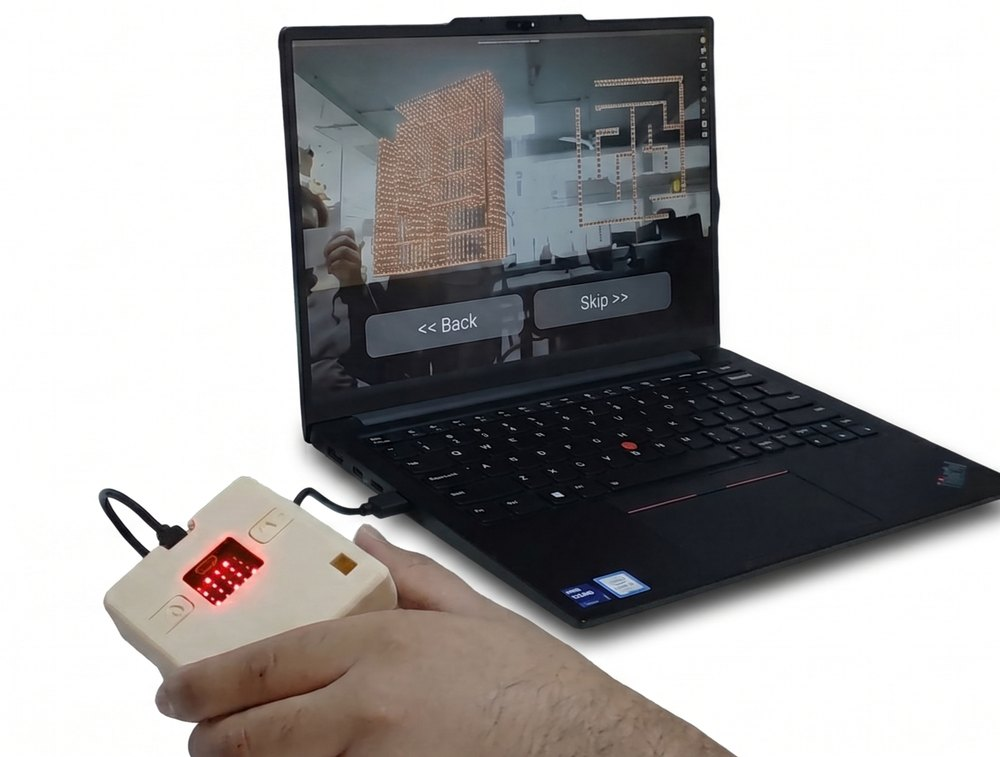
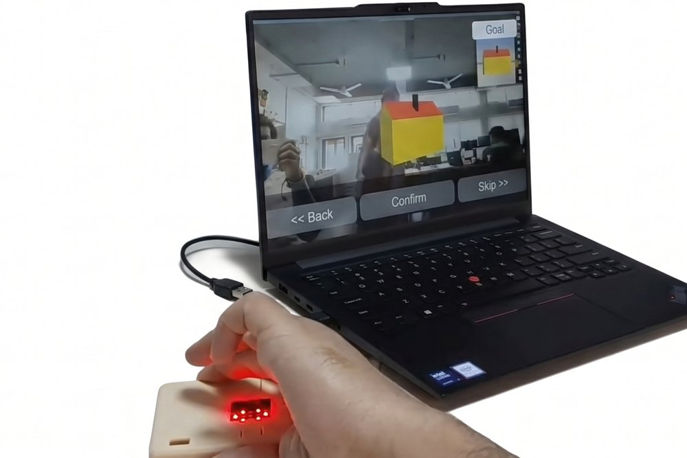
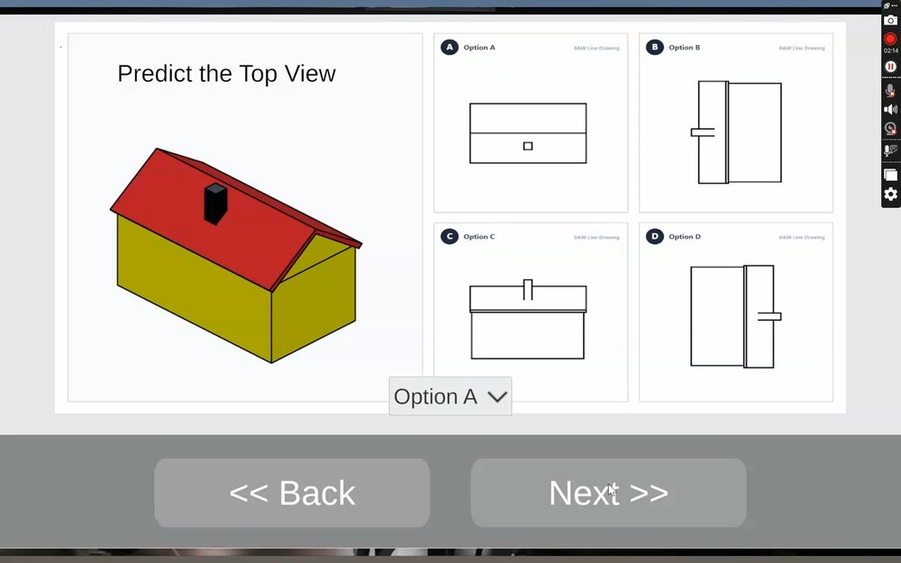
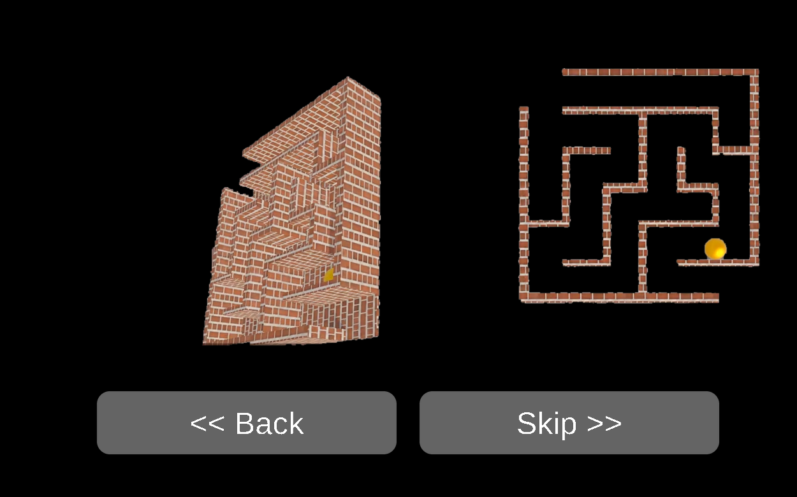
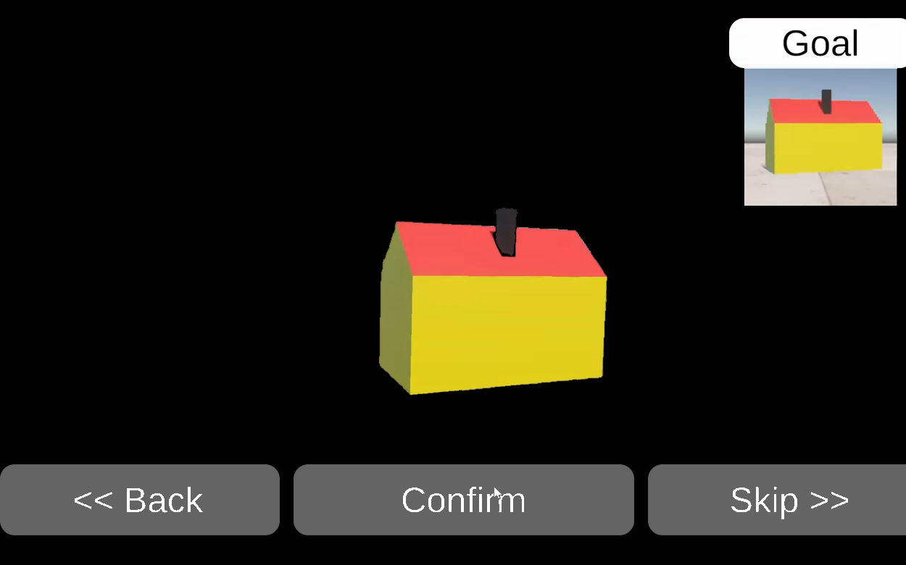
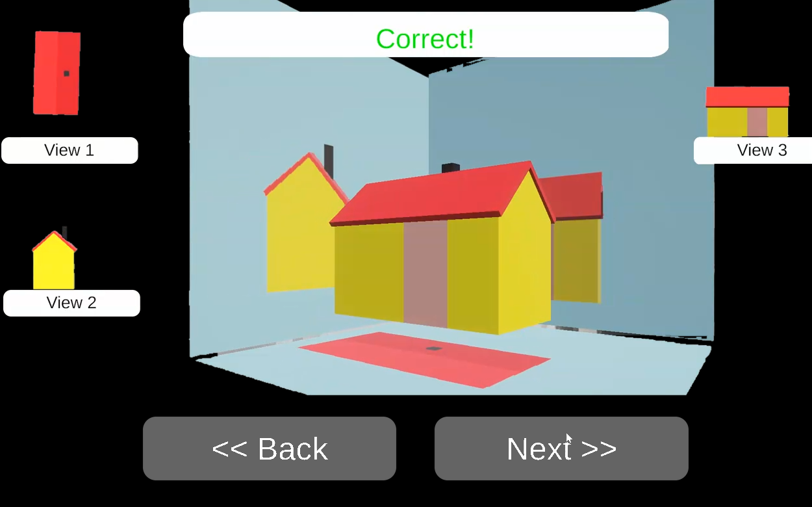
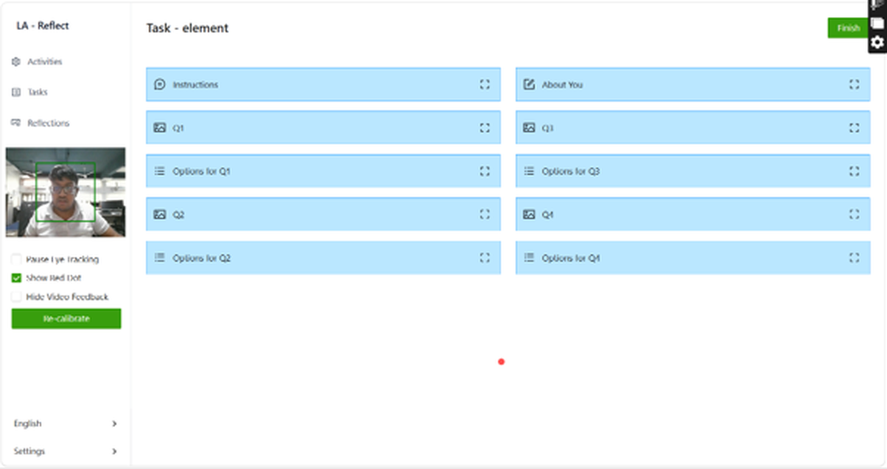
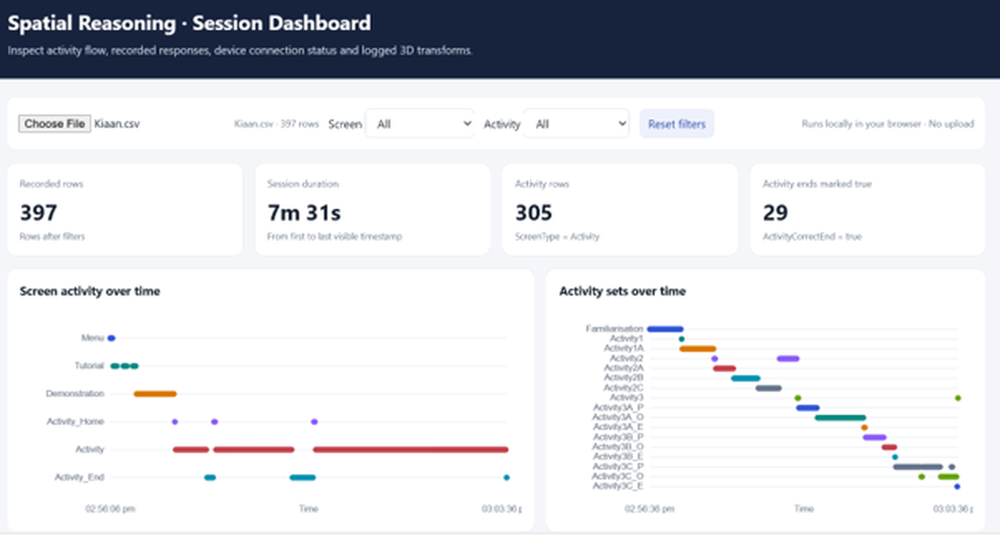
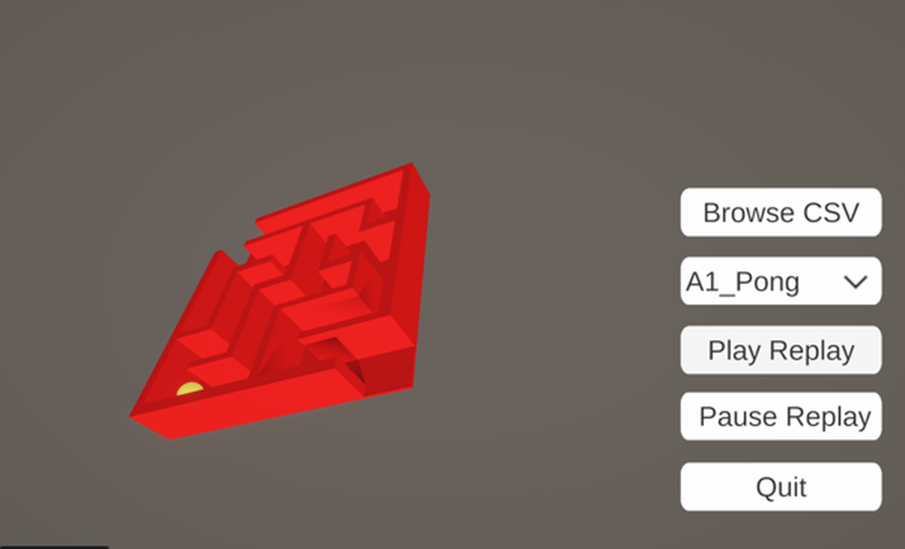

Mitra: An Embodied Tangible Environment for Spatial Reasoning
Designer & developer · ET-606 Tools Lab · Nov 2026
Learning Problem / Gap
Spatial reasoning is underemphasised in upper elementary education and mostly taught through static textbook methods, yet it is inherently embodied. Mitra asks whether physically enacting spatial transformations helps.
Learning Objectives
Learners practise the bodily actions of spatial orientation, mentally rotate objects to match a target, and predict, observe and explain 3D projections.
Learners & Curriculum
Target Learners
Upper elementary school students
Curriculum / Topic
Spatial reasoning: object orientation, mental rotation and spatial projections
Pedagogical Framework
Embodied cognition, a spiral curriculum (from bodily orientation to abstract projections), constructivism and pair discussion.
Tangible / Embodied Artefact Design
A BBC Micro:bit in a 3D-printed case is the controller: turning it turns a virtual 3D object in Unity. It is an interface, not a replica, so one controller stands in for many objects and logs every rotation.
Learning Activity Design
1. Maze: tilt the Micro:bit to guide a ball to the exit.
2. Match the orientation: rotate an object to a target orientation.
3. Predict-Observe-Explain: predict a 3D object's projection, observe it, then explain aloud.
Artefact & Classroom



In-session Screenshots



Components



Deployment Context & Participants
A working prototype from ET-606 (Tools Lab, CET, IIT Bombay), with no formal user study yet. Next: a study with upper elementary students on usability, engagement and spatial reasoning.
Assessment & Data Collected
Pre/post test (items from the Spatial Reasoning Instrument, built with LA-Reflect) and a CSV interaction log, with a Unity replay mode and an HTML dashboard.